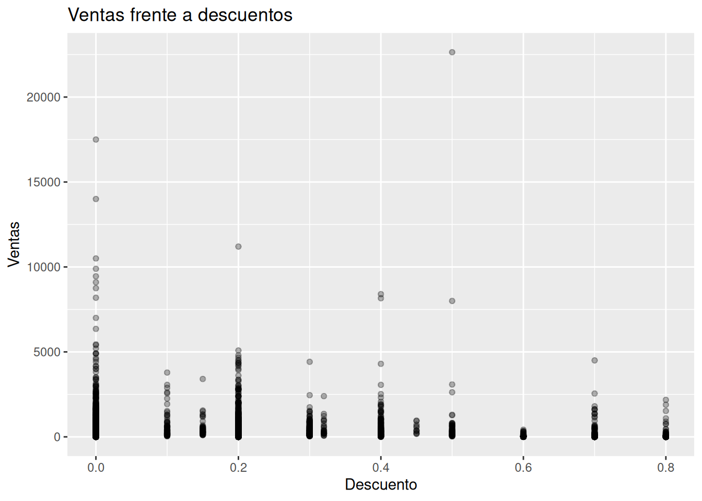
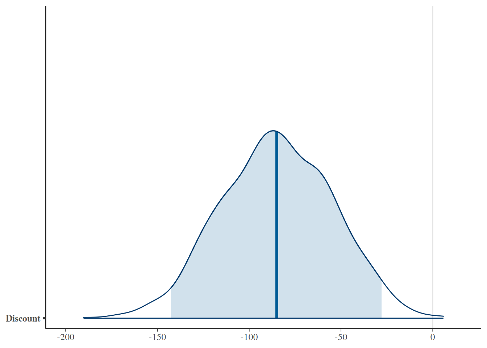
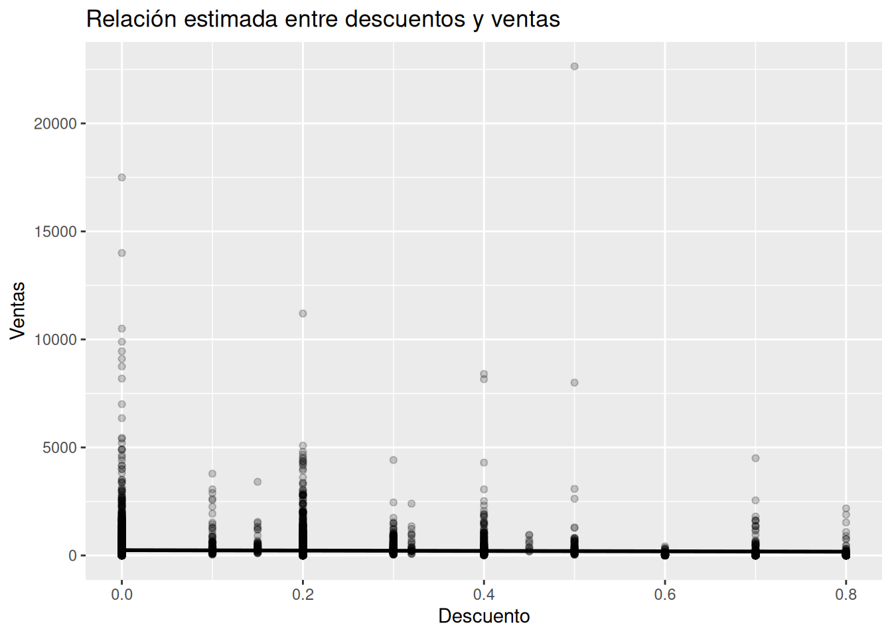
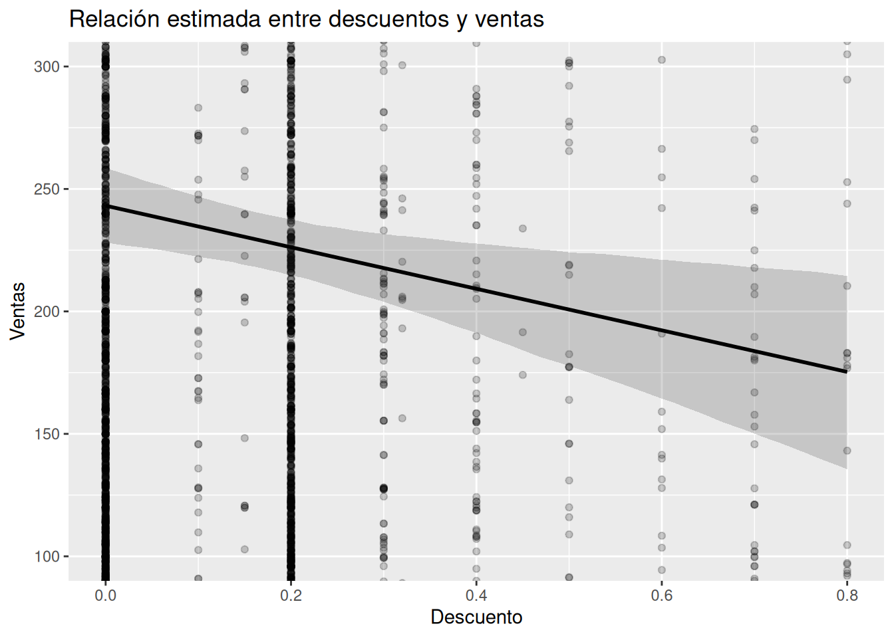

Analizamos si los descuentos parecen asociarse con un aumento de las ventas utilizando una regresión lineal bayesiana en R y el conjunto de datos Superstore.
Author
David Villafuerte
Published
July 29, 2026
En prácticamente cualquier empresa existe una forma rápida de intentar vender más: ofrecer descuentos.
La estrategia parece intuitiva. Si un producto cuesta menos, más clientes estarán dispuestos a comprarlo y, como consecuencia, las ventas aumentarán. Sin embargo, la realidad suele ser bastante más compleja.
Un descuento puede incrementar las ventas de un producto, pero también puede atraer compras que se habrían realizado incluso sin la promoción, reducir innecesariamente el margen de ganancia o convertirse en una práctica habitual que los clientes terminan esperando.
Desde la perspectiva del negocio, la pregunta importante no es si un descuento puede aumentar una venta aislada, sino si existe evidencia de que mayores descuentos suelen asociarse con mayores niveles de ventas.
En este artículo abordaremos esa pregunta utilizando un enfoque bayesiano. En lugar de buscar una respuesta absoluta, estimaremos qué relación parece existir entre ambas variables y cuánta incertidumbre permanece alrededor de esa relación.
Trabajaremos con el conjunto de datos Superstore Sales, ampliamente utilizado para estudiar problemas de analítica de negocios en áreas como ventas, logística y marketing.
Con frecuencia estas decisiones se toman apoyándose en la experiencia del equipo comercial o en resultados obtenidos durante campañas anteriores. Sin embargo, pocas veces se analiza si existe una relación consistente entre el nivel de descuento ofrecido y el valor de las ventas registradas.
Responder esta pregunta resulta útil porque permite evaluar si la política comercial parece alinearse con el comportamiento observado en los datos.
Naturalmente, sabemos que las ventas dependen de muchos otros factores:
categoría del producto;
segmento del cliente;
región;
competencia;
estacionalidad;
calidad del producto;
estrategias de marketing.
Por esa razón utilizaremos un modelo deliberadamente sencillo. Nuestro objetivo no es explicar completamente las ventas, sino estudiar si los descuentos parecen aportar información relevante sobre ellas.
Más adelante incorporaremos modelos con múltiples variables explicativas. En esta primera aproximación queremos comprender únicamente la relación entre dos variables.
Explorando los datos
Antes de construir cualquier modelo conviene observar directamente los datos.
En particular responderemos tres preguntas sencillas:
¿Cómo se distribuyen las ventas?
¿Qué niveles de descuento aparecen con mayor frecuencia?
¿Existe alguna relación visible entre ambas variables?
Cargar los datos
Un vistazo a las variables principales
Data summary
Name
select(superstore, Sales,…
Number of rows
9994
Number of columns
2
_______________________
Column type frequency:
numeric
2
________________________
Group variables
None
Variable type: numeric
skim_variable
n_missing
complete_rate
mean
sd
p0
p25
p50
p75
p100
hist
Sales
0
1
229.86
623.25
0.44
17.28
54.49
209.94
22638.48
▇▁▁▁▁
Discount
0
1
0.16
0.21
0.00
0.00
0.20
0.20
0.80
▇▆▁▁▁
La tabla resume las dos variables que utilizaremos durante todo el análisis.
Antes de interpretar cualquier resultado conviene comprobar que no existan valores inesperados, errores evidentes de captura o distribuciones que requieran una transformación previa.
¿Cómo se distribuyen las ventas?
La distribución de las ventas presenta una marcada asimetría hacia la derecha. La mayor parte de los pedidos corresponde a ventas de pequeño importe, mientras que el número de operaciones disminuye rápidamente a medida que aumenta el valor de la venta.
También se observan unas pocas operaciones de importe muy elevado que pueden considerarse valores atípicos desde un punto de vista descriptivo. Este comportamiento es habitual en muchos conjuntos de datos comerciales, donde unas pocas ventas representan una parte importante del volumen económico total.
¿Qué descuentos aparecen con mayor frecuencia?
La política comercial de Superstore no utiliza todos los porcentajes de descuento con la misma frecuencia. Los pedidos sin descuento son claramente los más numerosos, seguidos por los descuentos del 20 %, que también aparecen de forma muy habitual.
Existen otros niveles de descuento —como el 30 %, 40 %, 60 %, 70 % y 80 %—, pero representan una proporción mucho menor del total de pedidos. Esto sugiere que la empresa concentra su estrategia promocional en unos pocos niveles de descuento predeterminados, en lugar de aplicar una amplia variedad de porcentajes.
¿Existe una relación visible entre descuentos y ventas?

El diagrama de dispersión muestra que la mayoría de los pedidos, independientemente del descuento aplicado, corresponde a ventas de importe relativamente bajo.
Los pedidos sin descuento incluyen algunos de los valores de venta más elevados del conjunto de datos. También aparecen operaciones de gran importe con descuentos del 20 % y, de forma aislada, con descuentos superiores.
Sin embargo, el gráfico no revela una tendencia lineal claramente definida entre ambas variables. La elevada dispersión de los puntos sugiere que el descuento, por sí solo, probablemente no sea suficiente para explicar el comportamiento de las ventas y que otros factores del negocio también desempeñan un papel importante.
Precisamente por ello resulta útil construir un modelo bayesiano que permita cuantificar esta relación y expresar explícitamente la incertidumbre asociada a ella.
Construyendo el modelo
Hasta ahora únicamente hemos observado los datos. Aunque el diagrama de dispersión puede sugerir una tendencia, resulta difícil cuantificar visualmente qué tan fuerte parece ser esa relación o cuánta incertidumbre existe alrededor de ella.
Para responder esa pregunta construiremos una regresión lineal bayesiana simple, donde las ventas serán la variable de respuesta y el descuento la variable explicativa.
El objetivo no es demostrar que los descuentos causan un aumento o una disminución de las ventas. Con un conjunto de datos observacional como este no podemos establecer relaciones causales. Lo que sí podemos hacer es estimar qué relación parece ser compatible con la evidencia disponible y expresar la incertidumbre asociada a esa estimación.
Ajustando el modelo
Una vez ajustado el modelo, el siguiente paso consiste en resumir la distribución posterior de sus parámetros. En lugar de centrarnos únicamente en un valor puntual, nos interesa conocer el rango de valores que parecen plausibles a la luz de los datos.
Resumen del modelo
Parametro
Mediana
MAD_SD
(Intercept)
243.24527
7.468706
Discount
-84.90257
31.927384
sigma
623.25714
4.035002
El modelo estima una venta media de 243,25 dólares cuando el descuento es igual a cero. Además, la mediana posterior de la pendiente es de −84,90, lo que indica que, dentro del modelo lineal ajustado, mayores niveles de descuento tienden a asociarse con menores niveles de ventas promedio.
La desviación residual estimada (σ = 623,26) pone de manifiesto que las ventas presentan una variabilidad muy elevada que el descuento, por sí solo, no consigue explicar. Este resultado es coherente con el análisis exploratorio y sugiere que otros factores del negocio, como la categoría del producto, el segmento del cliente o la región, probablemente desempeñan un papel importante en el comportamiento de las ventas.
El intervalo de credibilidad del 95 % para la pendiente se extiende aproximadamente desde −142,56 hasta −27,94.
Un aspecto especialmente relevante es que todo el intervalo permanece por debajo de cero. En consecuencia, la evidencia disponible resulta compatible con una asociación negativa entre el descuento y las ventas dentro del modelo ajustado.
Es importante interpretar correctamente este resultado. El modelo no demuestra que ofrecer descuentos reduzca las ventas. Lo que indica es que, considerando únicamente estas dos variables y la información contenida en el conjunto de datos, los valores más plausibles para la pendiente son negativos.
¿Qué nos dice la distribución posterior de la pendiente?

La distribución posterior resume todos los valores plausibles para la pendiente del modelo. Su centro se sitúa alrededor de −85, muy próximo a la mediana posterior obtenida anteriormente.
La franja sombreada representa el intervalo central del 95 % de la distribución posterior y coincide con el intervalo de credibilidad calculado previamente. Como prácticamente toda la distribución se encuentra por debajo de cero, el conjunto de escenarios compatibles con la evidencia apunta hacia una asociación negativa entre el descuento y las ventas.
Una de las principales ventajas del enfoque bayesiano es precisamente esta representación gráfica de la incertidumbre. En lugar de resumir el resultado mediante un único coeficiente, podemos visualizar directamente qué valores parecen más plausibles y cuáles reciben un menor respaldo por parte de los datos.
Visualizando la relación estimada
El siguiente gráfico combina la información observada con la estimación obtenida mediante el modelo bayesiano.
La línea representa la relación media estimada y la banda refleja la incertidumbre alrededor de esa estimación.

La línea de regresión presenta una pendiente descendente moderada, coherente con el coeficiente estimado por el modelo. Al ampliar la escala del eje vertical puede apreciarse que la venta media estimada disminuye gradualmente conforme aumenta el descuento.

La banda de incertidumbre permanece relativamente estrecha para los descuentos más frecuentes y se ensancha ligeramente en los niveles de descuento más elevados. Este comportamiento es esperable, ya que existen menos observaciones en esos valores y, por tanto, el modelo dispone de menos información para realizar sus estimaciones.
Aunque la tendencia descendente es consistente con la distribución posterior de la pendiente, también resulta evidente que la dispersión de las ventas alrededor de la línea es muy grande. Esto confirma que el descuento explica únicamente una pequeña parte de la variabilidad observada en las ventas.
Interpretando los resultados
La evidencia obtenida mediante el modelo bayesiano sugiere que la relación entre descuentos y ventas es más compleja de lo que podría suponerse inicialmente.
Lejos de observar una asociación positiva, el modelo encuentra que los niveles de descuento más elevados tienden a asociarse con ventas promedio ligeramente menores. Sin embargo, esta asociación debe interpretarse con cautela.
El conjunto de datos utilizado es observacional y el modelo incorpora únicamente una variable explicativa. En consecuencia, el efecto estimado podría estar reflejando la influencia de otros factores no incluidos en el análisis. Por ejemplo, determinados descuentos podrían aplicarse con mayor frecuencia a productos de menor precio, a categorías específicas o durante campañas comerciales concretas.
Por ello, el resultado más importante de este análisis no es concluir que los descuentos reduzcan las ventas, sino reconocer que la evidencia disponible no respalda la idea de que ofrecer mayores descuentos conduzca automáticamente a mayores niveles de ventas.
Recomendaciones para el negocio
A primera vista podría parecer razonable pensar que ofrecer mayores descuentos debería traducirse en mayores ventas. Sin embargo, la evidencia obtenida en este análisis invita a ser más prudentes.
El modelo bayesiano no encuentra indicios de que incrementar el descuento se asocie con un aumento de las ventas. Por el contrario, la relación estimada entre ambas variables resulta compatible con una asociación negativa. Esto sugiere que aumentar los descuentos, por sí solo, difícilmente constituye una estrategia suficiente para impulsar las ventas.
No obstante, este resultado no debe interpretarse como una recomendación para eliminar las promociones comerciales. Los descuentos continúan siendo una herramienta valiosa cuando forman parte de una estrategia más amplia que considere el tipo de producto, el segmento de clientes, la estacionalidad y los objetivos específicos de cada campaña.
Desde la perspectiva de Business Analytics, el principal aprendizaje consiste en evitar decisiones basadas únicamente en intuiciones. Antes de ampliar una política de descuentos conviene evaluar si realmente genera el comportamiento esperado o si simplemente reduce el margen de ganancia sin producir un incremento significativo en las ventas.
Un siguiente paso natural sería construir un modelo con varias variables explicativas que incorpore información sobre categorías de productos, regiones, segmentos de clientes y otros factores relevantes. Esto permitiría estimar el efecto del descuento controlando simultáneamente por otras características del negocio.
Reflexión bayesiana
Los modelos bayesianos no eliminan la incertidumbre; ayudan a describirla de forma explícita.
En este artículo no obtuvimos una respuesta categórica sobre si los descuentos “funcionan” o no. En cambio, estimamos una distribución de valores plausibles para el efecto del descuento sobre las ventas y utilizamos esa información para comprender mejor la evidencia disponible.
Esta diferencia puede parecer sutil, pero tiene importantes implicaciones para la toma de decisiones. En lugar de actuar como si conociéramos la respuesta exacta, reconocemos que siempre existe incertidumbre y que las decisiones empresariales deben considerar esa incertidumbre como parte del proceso de análisis.
Pensar de forma bayesiana significa precisamente eso: actualizar nuestras creencias a medida que incorporamos nueva evidencia, en lugar de buscar respuestas absolutas en un entorno donde rara vez existen.
Conclusión
Comenzamos este proyecto con una pregunta aparentemente sencilla:
¿Vale la pena ofrecer descuentos para vender más?
Después de explorar los datos y ajustar un modelo de regresión lineal bayesiana, la respuesta resulta más matizada de lo que cabría esperar.
La evidencia disponible no respalda la idea de que ofrecer descuentos más elevados conduzca, por sí solo, a mayores niveles de ventas. Por el contrario, el modelo encuentra una asociación negativa entre ambas variables. Sin embargo, esta asociación no debe interpretarse como una relación causal, ya que las ventas dependen de muchos otros factores que no fueron incluidos en este análisis.
Más que proporcionar una respuesta definitiva, este proyecto ilustra cómo un modelo bayesiano puede ayudarnos a formular mejores preguntas y a expresar explícitamente la incertidumbre que acompaña a cualquier decisión empresarial.
En la siguiente entrada ampliaremos este enfoque incorporando nuevas variables explicativas para comprender con mayor profundidad qué factores parecen influir en el comportamiento de las ventas.
Apéndice — Código completo
A continuación se presenta el código utilizado durante todo el análisis. Los bloques aparecen en el mismo orden cronológico en que fueron ejecutados durante el artículo. Se incluyen con eval: false para facilitar su reutilización sin ejecutar nuevamente el análisis durante el renderizado.